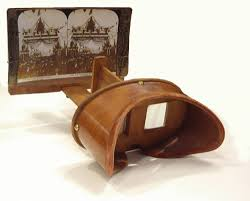

The 1800's
In 1838, Charles Wheatstone, an English scientist, invented the stereoscope. He did research on how the brain perceives depth, specifically how 2-D images are processed by the eye. He found that the brain could interpret 2-D images as a single 3D image with the proper geometry, providing depth to images and making them more immersive. These were the first steps in crafting a virtual reality, albeit a very rudimentary one at that. These design ideas can be found in modern day technologies, such as the Google Cardboard, which is a cheap VR display for mobile phones.